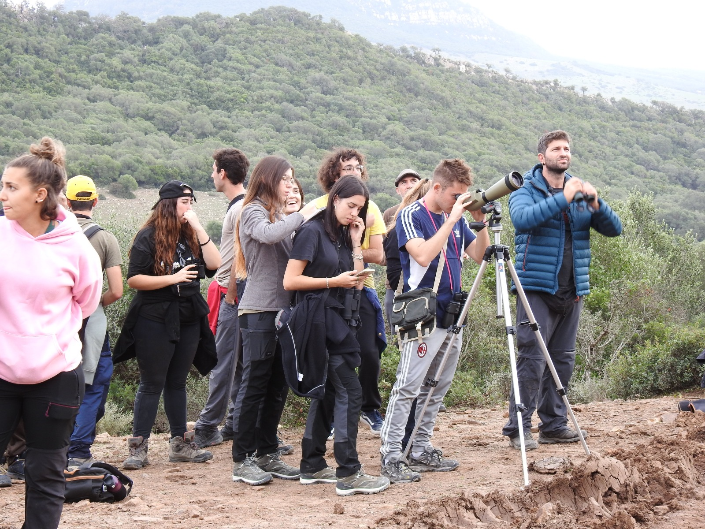

Currículum
Guillermo Fandos
Profesor Ayudante Doctor en el Departamento de Biodiversidad, Ecología y Evolución de la Universidad Complutense de Madrid. Ecólogo espacial dedicado al análisis cuantitativo de la biodiversidad, el movimiento animal y la conservación. Miembro del grupo de investigación Biología y Conservación Evolutiva (BCV).
Google Scholar · ORCID 0000-0003-1579-9444 · Perfil investigador UCM · Publicaciones
Puestos
- 2023–actualidadProfesor Ayudante DoctorDpto. Biodiversidad, Ecología y Evolución, Universidad Complutense de Madrid
- 2022–2023Investigador UNA4CAREER (H2020-MSCA-COFUND)Universidad Complutense de Madrid · proyecto INCISE
- 2018–2022Investigador postdoctoralGrupo de Macroecología de Damaris Zurell, Humboldt-Universität zu Berlin y Universidad de Potsdam · proyecto BIOPIC (DFG)
Formación
- 2017Doctor en EcologíaUniversidad Complutense de Madrid
- 2012Máster en Biología de la ConservaciónUniversidad Complutense de Madrid
- 2011Licenciado en BiologíaUniversidad Complutense de Madrid
Proyectos financiados
- 2024–2026INTRADISP · Investigador principalVariación intraespecífica de la dispersión en aves europeas · UCM Doctores Emergentes (PR17/24)
- 2025–2027SHAREPOINT · Miembro del equipoOrganización social y transmisión de parásitos en aves de la selva, Guayana Francesa · IP Javier Pérez-Tris
- 2024–2027RIMed-Fauna · Miembro del equipoFauna en ecosistemas fluviales mediterráneos · Red de Parques Nacionales · IP María del Mar Sánchez-Montoya
- 2022–2023INCISE · Investigador principalIntegración de ciencia ciudadana y censos estandarizados · H2020-MSCA-COFUND UNA4CAREER
- 2019–2021RangeDyn · Equipo principalDel patrón al proceso en la dinámica de las áreas de distribución · DAAD · IP Damaris Zurell
- 2018–2023BIOPIC · Responsable del paquete de trabajo de dispersiónDemografía, dispersión e interacciones bióticas ante el cambio global · DFG · IP Damaris Zurell
Contratos aplicados: modelización del hábitat de murciélagos para el Atlas de murciélagos de España (TRAGSA, 2024–2025); dinámica poblacional de la cigüeña negra para la evaluación del Libro Rojo (Junta de Castilla y León, 2017–2018).
Dirección de trabajos
- Actualmente: 3 investigadores (técnico de investigación, doctoranda y doctorando codirigido), 1 estudiante visitante y 4 TFM en curso. Ver Personas.
- Finalizados: 11 TFM (másteres de Zoología y Biología de la Conservación de la UCM; Humboldt-Universität zu Berlin) y 5 TFG. Miembro de tribunales de tesis doctoral en la UCM.
Docencia
Docencia de grado y máster en la UCM en zoología, análisis de la biodiversidad animal, seguimiento de poblaciones amenazadas y evaluación ambiental (Grado en Biología; Máster en Biología de la Conservación; Máster en Zoología). Coimparte Introducción a la programación en R en la Escuela de Doctorado de la UCM. Coordinador del curso de experto de 150 horas Aplicaciones Bioinformáticas en Biodiversidad, Ecología y Evolución. Codesarrollador del curso de máster Quantitative Conservation Biogeography con Damaris Zurell. Ver Docencia.
Labor editorial y servicio
- Editor de Ardeola, la revista de la Sociedad Española de Ornitología (SEO/BirdLife).
- Revisor habitual para revistas de ecología y conservación.
- Revisor y colaborador de eBird, contribuyendo a la calidad de los datos de uno de los mayores proyectos de ciencia ciudadana del mundo.
- Miembro de la Acción COST EUFLYNET sobre investigación de la migración de aves.
Divulgación
Ponente en Pint of Science (Berlín) y cocoordinador de la edición de Potsdam. Talleres sobre ecología de murciélagos y fototrampeo en La Noche de los Investigadores.

Experiencia de campo
Además de los proyectos actuales, trabajo de campo y expediciones en:
- Guayana Francesa: comunidades de aves de selva (proyectos CEBA)
- Honduras: investigación en pequeños mamíferos con Operation Wallacea
- Costa Rica: ecología de mamíferos en la Estación Biológica La Selva
- España y Marruecos: proyectos de seguimiento de aves
Ciencia abierta
El código y los datos de nuestros artículos están disponibles en GitHub y archivados en Zenodo.